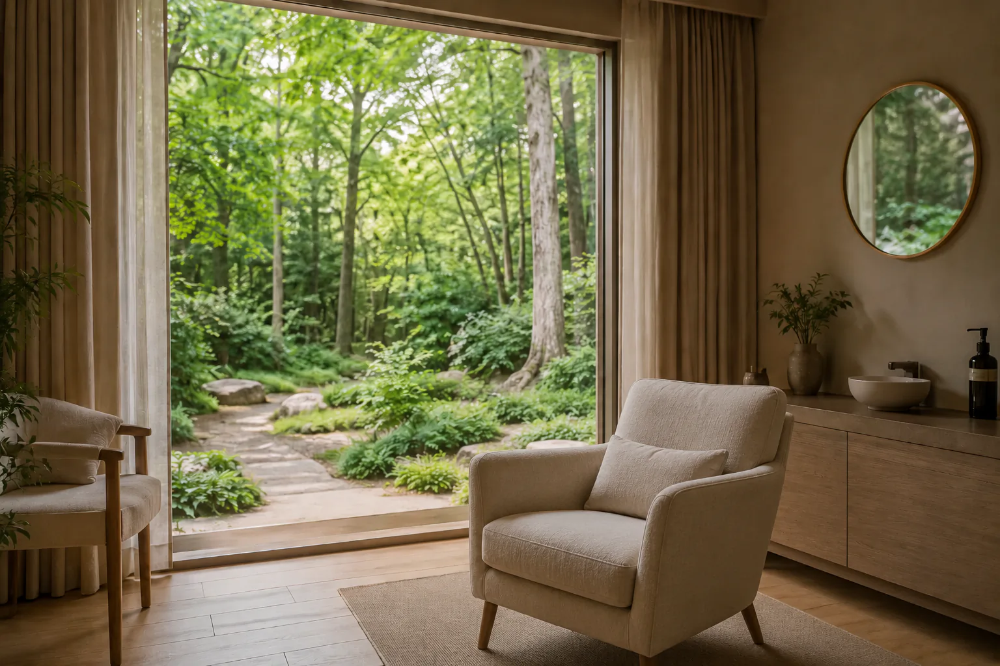

Praktijk voor psychotherapie · Ingrid Monsieur
Als alles te veel wordt, mag je hier op adem komen.
Individuele psychotherapie en begeleiding bij stress en burn-out, voor volwassenen. Op jouw tempo, in een veilige en warme omgeving.

Hoe verloopt een traject?
1
Kennismaking
Een eerste gesprek waarin we rustig verkennen wat er speelt en of het klikt.
2
Samen op weg
In gesprekken op jouw tempo werken we aan inzicht, herstel en veerkracht.
3
Op eigen kracht verder
We ronden af wanneer jij voelt dat je weer zelf verder kan — de deur blijft open.
“Bij Ingrid voelde ik me vanaf het eerste gesprek gehoord. Stap voor stap kreeg ik weer grip op mijn leven.”
— een cliënte“Na mijn burn-out leerde ik opnieuw naar mezelf luisteren. Rustig, zonder oordeel, met veel warmte.”
— een cliënt